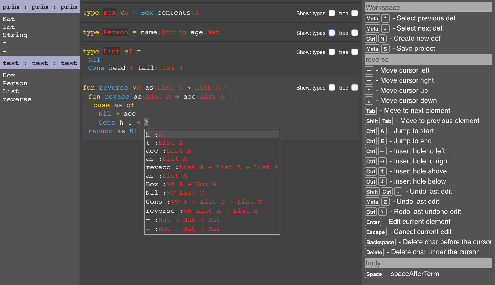
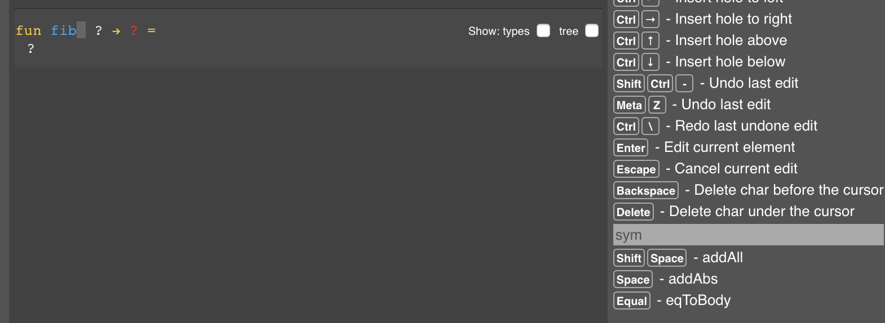

It’s been about ten months since I started work in earnest on Compose. Though I am not presently at a particularly noteworthy milestone, I would like to take this opportunity to catch up on the progress so far, so that I can attempt to do a better job of documenting progress going forward.
C0
My initial plan was to create a bootstrap language and compiler, which I called Compose Mark Zero (C0 for short). I eventually want the Compose compiler and editor to be written in Compose (chiefly because I would like to minimize the amount of code I have to write in programming languages that do not adhere to my principles, but also because it’s good to eat ones own dog food). However, given that Compose will not be a textual language, that either meant that I needed to create an entire compiler and editor in some other language and then use that to write the real Compose compiler, or I could make a pseudo-Compose that was as Compose-y as possible but which still constructed the AST by parsing source files.
This latter bootstrap plan seemed to be the path of least resistance, so I embarked upon the creation of C0. I wrote it in Scala, which is the least horrible of the languages in which I have a substantial amount of experience. Undoubtedly partly due to this choice, the provisional syntax of C0 ended up looking somewhat Scala-like. (Let’s call it the bastard child of Scala and Haskell.)
The design plan for the initial language was a semi-pure, strict, functional language, which would use parametric polymorphism and type classes for abstraction. It would have sum types, products with named components (records), and support pattern matching on both.
Just to give the flavor of the concrete syntax, here’s the definition for List:
/// Inductively defined linked list (a cons list for the lispers)
data List[A] = Nil | Cons (head :A, tail :List[A])
And the definition of the Eq interface (typeclass):
/// The `Eq` interface enables equality comparisons for types for which support it.
interface Eq[A] {
fun eq (a1 :A, a2 :A) :Bool
fun notEq (a1 :A, a2 :A) :Bool
}
fun defNotEq[A:Eq](a1 :A, a2 :A) :Bool = !eq(a1, a2)
fun boolEq (a :Bool, b :Bool) :Bool = foreign("a === b")
fun boolNotEq (a :Bool, b :Bool) :Bool = foreign("a !== b")
impl eqBool = Eq[Bool](eq=boolEq, notEq=boolNotEq)
fun stringEq (a :String, b :String) :Bool = foreign("a === b")
fun stringNotEq (a :String, b :String) :Bool = foreign("a !== b")
impl eqString = Eq[String](eq=stringEq, notEq=stringNotEq)
fun arrayEq[A:Eq] (a1 :Array[A], a2 :Array[A]) :Bool = {
fun loop (ii :I32) :Bool =
if (ii == a1.length) true
else if (a1@ii != a2@ii) false
else loop(ii+1)
if (a1.length == a2.length) loop(0) else false
}
impl eqArray[A:Eq] = Eq[Array[A]](eq=arrayEq, notEq=defNotEq)
At the time I didn’t support inline definition of interface method defaults, and I intentionally opted for an implementation (instance) definition syntax that highlighted the “dictionary of functions” nature of an implementation, so no inline definition of functions in implementations either. Such choices will eventually be irrelevant when the textual representation of my language is simply a visualization of the actual source of truth: the AST, so even remembering that I was wasting time thinking about this bothers me.
I got pretty far down the road with C0, implementing most of a bidirectional type checker with local type inference, and very hacky, half-baked support for typeclass elaboration. The name-resolved and type-checked AST is lowered to a simpler core language AST and from that JavaScript is generated.
However, after pushing through to this point and then circling back around to start tightening
things up and fixing many of the terrible hacks in the type checker, I began to regret many of the
syntax and parser-driven decisions I’d made with the AST. Though I translated unary and binary
operations into function application during the parsing process (a == b becomes eq(a, b), it’s
functions all the way down), I didn’t want to have to add support for custom operators and
precedence, nor did I want to write a bunch of Lisp but with the parenthesis in a slightly
different place.
I was also running into difficulties cleaning up the type checker and converting things to a more rigorous approach, partly because I had opted to leave functions uncurried in the AST. I was investigating using the bidirectional type checking algorithm described by Dunfield and Krishnaswami (which I prototyped separately), but adapting that to uncurried functions was going to be messy.
I also had in the back of my mind the idea that my type checker would be radically different in the final language because it would run incrementally as the AST was constructed. The jury is still out on that front, but I still harbor those suspicions and am finally close to being able to find out (more on that later).
The upshot of all this was that I decided that the path of least resistance I had chosen earlier, to create a “traditional” compiler before creating a compiler/editor hybrid was skewing my work so badly that I should stop, bite the bullet, and take the pain of creating a combination compiler and editor directly, using an existing cave language. Which brings us to the next chapter of the tale.
PCE0
Two considerations led me to choose PureScript as the implementation language for the compiler/editor combo. The first was that writing in Scala was dragging my aesthetics in a direction I didn’t like. I knew that the final form of Compose would end up looking more like Haskell than Scala (based on the Tufte principle of not putting marks on the page unless they communicate meaningful information to the viewer/reader), so I felt that PureScript would provide better aesthetic influences. The second was that, even though the final editor will likely be built on a completely custom graphics and user interface foundation, the prototype editor would come together most quickly by building atop HTML+CSS (a deal with the devil if there ever was one). This was why C0 was emitting JavaScript: even had E0 been written in C0, per the original plan, it would have started as a browser-based UI application.
So I embarked upon the creation of PCE0. I put together a basic AST for terms and types, and then started working immediately on the display and editing of the AST. I figured that I should start to tackle those challenges immediately rather than distract myself with reimplementing symbols and the type checker and the other compiler plumbing. Those could wait until I had an idea of how the editing process would work.
I got as far as formatting an AST into a simple markup model which was then rendered in HTML, and
supported the hacky beginnings of editing. Here’s a screenshot of the editor displaying a function,
with the function argument as currently being edited:
Unfortunately, my frustration with PureScript and its tool and library ecosystem had been building during this time, and I eventually realized that I should restart again using a language with better tooling. I recorded more details on what was baking my noodle on the PCE0 page for the curious.
Even though the “language” part of Compose will probably closely resemble PureScript (as a Haskell-inspired, but strict, functional language), I believe that the vertically integrated approach to constructing programs (type checking the AST as it is constructed, and directing program construction based on partial type information) will make the use of a powerful but terse language vastly more accessible.
RCE0
Long before I started on CE0 in Scala, I had been interested in Reason (a reskinning of ML with a more C-like syntax, and geared toward generating JavaScript and integrating with the web ecosystem). My original investigations left me with the opinion that it was too early to try to use the language, they were still knee deep in making basic things work. But many months had passed since then, and they had recently released a React integration for Reason, which seemed worth investigating.
I was quickly disabused of the notion that using Reason would be a good idea. Within the span of a day’s work, I had a basic project set up and had accumulated so many paper cuts that I knew this approach was dead on arrival. Moving right along…
TSCE0
We finally arrive to at our current (and hopefully final) stop on the tour. Because I use my own IDE, these various language explorations had all involved leveraging the Language Server Protocol support (to what extent it existed) for the languages in question.
For unrelated reasons, I had recently had cause to wire up TypeScript language server support and was deeply impressed by how much better it was than the nearly dozen other languages whose language server projects I had tried. This was all the more impressive given that the TypeScript team didn’t even maintain their language server, like many languages, they had started on an “interactive compiler daemon” before LSP existed, so some third party just bolted together their existing interactive compiler with the LSP protocol. But unlike many languages, their’s was somehow robust, full featured and very fast.
This uncommonly good interactive compiler support, combined with reasonable UI construction using React, and the tight edit/compile/debug cycle that is perhaps the only good thing about the JavaScript ecosystem, convinced me to hold my nose and give TypeScript a go. I foolishly tried to use TypeScript in a functional programming style for a while before giving up in frustration and doing as the Romans do. I remind myself regularly that all of this code is just a means to an end and will not have to be maintained beyond the point where I escape Earth’s orbit and can rewrite Compose in Compose.
I got myself back to the point of defining an AST for types and terms, and got started on the editor. Things moved much more quickly this time (partly due to having mostly designed the markup and editing model in PSCE0) and I was soon well beyond just displaying ASTs and could start doing the real research of how to comfortably create and edit ASTs in a structured editor.
Along the way, it proved useful to create a proper symbol table, do some rudimentary type checking, define a first pass at a serialization format for the ASTs, define a workspace and project model, and even do some basic type-directed symbol completion. I have not yet recreated everything that I had in C0: there is no notion of interfaces (type classes) in either the AST nor the type checker, and I have not yet even started on lowering to an intermediate language nor generating code. My focus has mostly been on building plumbing only as needed to inform the work on the editor.
Here’s what TSCE0 looks like today:

On the left, we have the workspace overview. A workspace contains one or more open projects, projects are comprised of one or more components (which can be either libraries or apps/executables), components are comprised of one or more modules, and modules are comprised of definitions. Components can also have dependencies. I won’t go into too many details here, but I have in progress documentation on the project model if you’re curious.
In this screenshot, we have the prim module in the prim component of the prim project which
defines some (temporary, hacky) built-in primitives. Then we have the test module in the test
component of the test project, which defines some random stuff I’m using for testing.
In the middle are some defs, open for viewing and editing. The reverse def (which I just typed in
before making this screenshot) shows a function with type and term parameters, a nested function
definition, a pattern match and an AST hole currently being filled in by symbol completion (not
particularly constrained by type). That completion list should also show some AST fragments (for
example, if you wanted to insert a let binding or a case for a nested pattern match), but
they’re not showing up for some reason. Bugs!
On the right is a list of all active key bindings. More on that in the next section.
Structured Editing
Because we’re not editing a 2D grid of ASCII characters, we’re editing the AST, it’s not going to be immediately obvious for someone used to editing programs by editing ASCII how to make the changes they want. As an experiment, I decided to structure things so that as the cursor moves around the AST, I always show all valid key bindings and a description of their effect.
For example, here we are creating a new function definition, and the cursor is currently editing the name of the function definition:

In the lower right, it shows that Shift Space will result in the insertion of a type parameter
(excuse the lack of meaningful descriptions for the key bindings, this experiment is somewhat new
and I haven’t gone through and added sensible descriptions for all the actions one can take when
editing the AST). Pressing just Space will add a term parameter. Presently, a new function
definition is automatically provided with a single term parameter (which is the ? to the right of
the function name), and as an ergonomic optimization, if a Space press would result in the
insertion of a term parameter “hole”, but a term parameter hole is already there, it just moves the
cursor into that hole. So pressing space moves the cursor from naming the function to naming the
first argument. You can also press = to jump directly to the body of the function.
In this way, key presses that are vaguely reminiscent of entering in an AST via ASCII text result
in direct edits to the AST instead. In Haskell, you could imagine typing fib x = and in Compose
that precise series of keystrokes will mostly do what you expect, name the function fib, name the
first argument x and jump to the body of the function where you can proceed to enter its
definition. Note that the “hole” shown for the return type of the function will eventually be
filled in automatically for you (if possible and desired) as you define the function body.
There are still a number of situations that require more research and experimentation. I try to
heuristically detect when you intend to enter an infix function (say you type x + 3) and I still
have to figure out how to enable ergonomic entry of “unprecedented” subexpressions (cases where you
would normally communicate to the parser via the use of parentheses). I will likely end up using
parentheses as well because they are a familiar tool, though in a more ephemeral way. In any case,
though there are many problems yet to be solved, I am optimistic that this approach can be made to
work, and I can eventually create a fully keyboard based mechanism for entering and editing ASTs
that feels enough like entering normal ASCII text that cave programmers can transition to it, and
which is ultimately at least as fast and efficient, if not faster, than what is possible today with
“IDE-augmented” ASCII entry.
Type feedback
Another small experiment that I’ve made is in communicating the type of all sub-expressions in an
AST. Especially in functional languages with complex types and dense expressions, it is woefully
insufficient to know just the type of every named term. Say you have an expression foo (bar 3)
baz. You can hover over foo, bar, 3 and baz to see their types, but what is the type of
(bar 3)? What is the type of the partially applied function foo (bar 3)? What is the type of
the entire expression? This is often critical information, especially when trying to learn and
understand complex type directed idioms with phantom type parameters sliding silently around behind
the scenes.
There’s nothing preventing IDEs from providing this information, the compiler knows it, but I have yet to encounter an IDE that makes such a thing possible. Moreover, things like the LSP have no provision for talking about ASTs at all so even posing the question in a meaningful way via that generic “editor to compiler” protocol is challenging. I’m sure there are IDEs that do this properly, but regardless, it’s very important to me that Compose do this properly.
So my first experiment has been to create a visualization of the types of every node in the AST:
(Ignore the weird prefix + application, that’s due to limitations with entering subexpressions at
the moment.)
Terminal nodes in the AST are annotated with their type, then parent nodes are annotated below those terminal annotations and so forth until the types for every node have been shown. There are many limitations to this approach, and it will either evolve substantially or be replaced, but it’s already interesting to see types percolate up through curried applications of functions, and the results of unification. It’s also quite useful for debugging the type assignment code.
Because everything is a live display right in the editor, you can actually edit the code and see the types evolve as you extend and change the AST.
Next steps
I’ve been toiling away in the salt mines of editing UX for quite a while, so I’m going to take a break from that and work on some type checking plumbing. I want to investigate whether its possible to structure the type checker and inferencer as essentially a functional reactive program. This may end up being equivalent to other “batch” bidirectional type inference and checking algorithms, but I suspect it will look very different on the surface.
After that I’ll likely reinstate some rudimentary mechanism for declaring interfaces and implementations (type classes and instances) and handling elaboration. From there it should be easy to recreate lowering to a core language and then JavaScript code generation.
Then I will hopefully be re-energized for another trip back to the salt mines for more work on the editing UX.